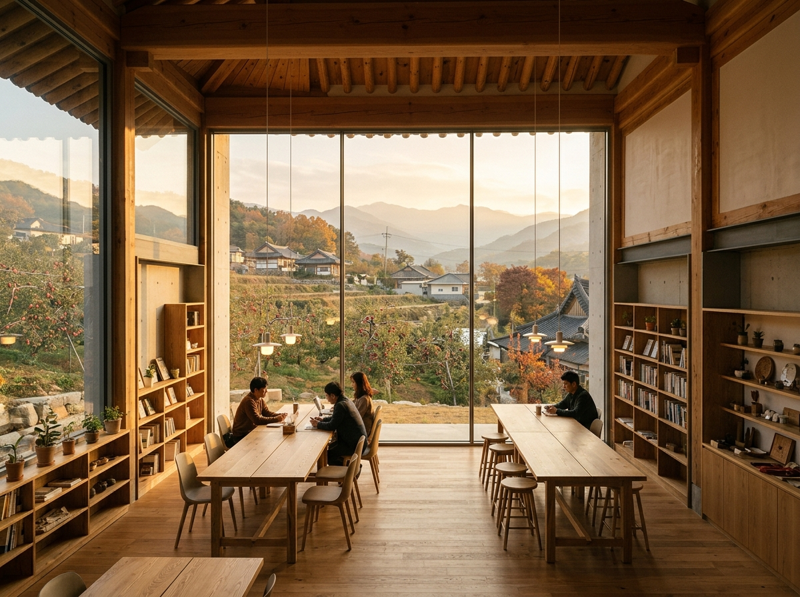
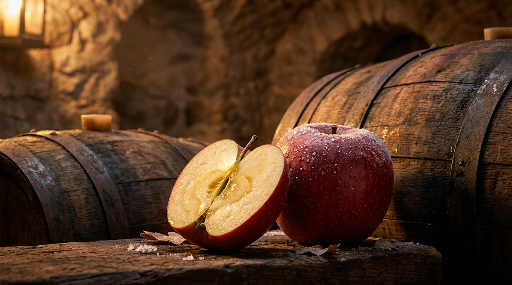

인구 총량 비례에서는 0처럼 짓눌리던 예산·충주·단양·금산·부여·공주 골짜기가 로그스케일(log10) 전환 즉시 황금빛 고부가가치 산업 기둥으로 융기합니다. 지도 기둥이나 우측 거점을 클릭해 5대 상속 AI 스토리텔링을 확인하세요.
“상품의 서사는 극한의 야생(Core)으로 매섭게, 공공 인프라와 배당 혜택은 따스한 햇살처럼 고루”
대기업 기성복 SW 종속·원물 헐값 출하에 머무는 일반 농촌 마을과, 국민개발자 에이전트 분신 + 스카 에디션 업사이클링 + 오크통 코어에이징 락인을 결합한 AI 햇살마을의 2026~2050 궤적을 비교합니다.
주민 1인당 평균 135개 AI 분신 운용 · 외주 600만 원 SW를 10만 원 일회용 오토마타로 대체(98.3% 절감).
서리·우박 상처 낙과를 헐값 폐기하지 않고 K-칼바도스 증류주·폴리페놀 바이오·애플우드 훈연칩으로 역브랜딩 수매.
우드버닝 각인 오크통 지하 숙성(1~3년 후 개봉 재방문) 및 도시 지식노동자 '딥 워크 벙커 스테이' 장기 체류 전환.

1조 원 콘크리트 데이터센터 신축 대신 기존 주민센터·작은도서관·국립공주대 예산캠퍼스를 90년대 PC방 같은 스마트 두레로 전환합니다. 농촌·산업·문화관광 3개 생활권(주민 300명·30개 프로젝트) 100일 실증으로 즉시 착수합니다.
2026→2050 가구당 실질 총소득 궤적 비교 (단위: 만 원/년, N=24 몬테카를로 ±1 SD)
원물출하·기성복 SW 종속 마을(회색 점선) vs AI 햇살마을 평균 및 기후·시장 변동 신뢰구간(황금 영역)
생산력 기본권 3단계 ‘AI 햇살 배당’ 누적 구조 및 재방문 생활인구 배수
현금 살포 논쟁을 넘어선 ① 접근 배당(컴퓨팅·분신) → ② 참여 배당(현장 암묵지 자산화) → ③ 성과 배당(공동 스토리·증류주 수익 환원)
농민의 사투리·자연어 발화 한 줄 → 일회용 맞춤형 수출·예약 오토마타 즉시 생성

스카 에디션 (Scarred Honor): 우박과 첫서리를 견딘 황금 밀병(蜜病) 사과
영하의 칼바람과 우박 상처를 스스로 치유하며 전분을 천연 꿀(소르비톨)과 항산화 폴리페놀로 고밀도 압축했습니다. 공판장 헐값 낙과가 아닌, 자연의 훈장을 새긴 하이엔드 디저트·플람베 다이닝 에디션입니다.